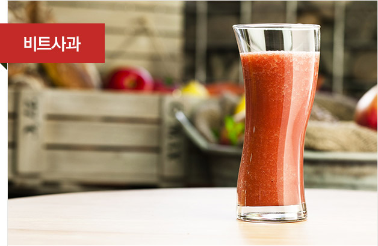
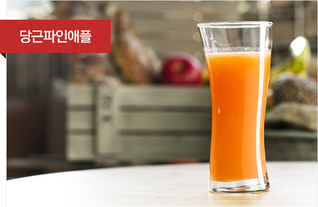
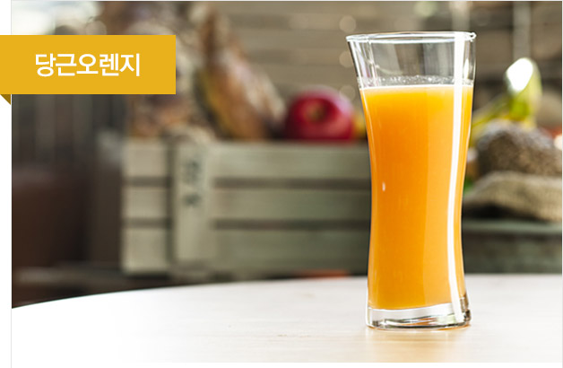
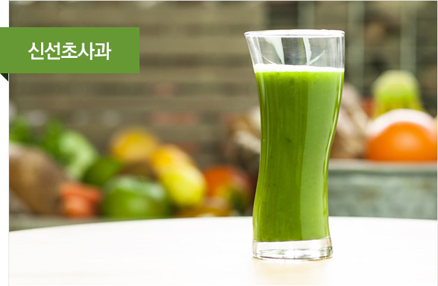
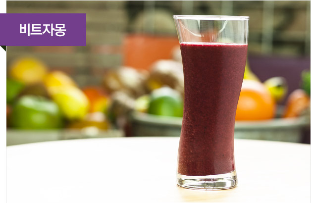

휴롬주스의 정의
휴롬주스는 신선한 채소 과일을 즉석에서 지그시 눌러짜
자연의 맛과 영양이 살아있는 주스입니다.
휴롬주스는?
채소 녹즙과 과일 주스를 한 잔에 담은 혼합주스 신선한 재료를 직접 골라 한 잔 한 잔 정성을 다해 만든 홈메이드 주스 효소가 살아 있는 생주스
-

- 사과 250g | 섬유소, 칼륨, 우루솔산
- 식이섬유소가 풍부해 변비예방 및 체내 불필요한 나트륨 배출로 인해 고혈압 예방과 우루솔산이 비만예방에 도움.
- 방울토마토 130g | 라이코펜, 루틴
- 라이코펜의 항산화 기능으로 인해 피부 노화 방지, 루틴 성분이 혈압조절을 도와 고혈압 예방 및 지방 연소.
- 영양 스토리
- 사과의 섬유소는 변비예방 및 체내 독소배출에 좋으며, 우루솔산 성분은 비만을 예방해줍니다. 라이코펜이 항산화 기능으로 인해 몸 속 불필요한 독소 및 노폐물의 배출을 도와줍니다.
- 주요 효능
- 변비예방, 독소배출, 비만예방
-

- 사과 300g | 섬유소, 칼륨, 우루솔산
- 식이섬유소가 풍부해 변비예방 및 체내 불필요한 나트륨 배출로 인해 고혈압 예방과 우루솔산이 비만예방에 도움.
- 비트 60g | 철분, 엽산
- 철분 흡수율이 높아 빈혈 예방에 좋으며 체내 독소로 부터 간세포를 보호해 간기능 향상을 도우며 엽산이 풍부해 임산부 입맛 진정효과와 빈혈예방.
- 영양 스토리
- 사과의 섬유소는 변비예방 및 체내 독소배출에 좋으며, 우루솔산 성분은 비만을 예방해줍니다. 특히 비트의 철분 성분은 빈혈 예방 효과적입니다.
- 주요 효능
- 변비예방, 독소배출, 빈혈예방
-

- 당근 70g | 비타민A, 베타카로틴
- 베타카로틴과 비타민A의 함유로 시력 개선과 항암효과.
- 파인애플 230g | 비타민B군, 브로멜린
- 소화를 촉진 시키며 vitB군이 다량 함유되어 신진대사에 도움.
- 비트 130g | 철분, 엽산
- 철분 흡수율이 높아 빈혈 예방에 좋으며 체내 독소로 부터 간세포를 보호해 간기능 향상을 도우며 엽산이 풍부해 임산부 입맛 진정효과와 빈혈예방.
- 영양 스토리
- 파인애플의 비타민B은 신진대사를 증진시키며 당근의 주성분인 베타카로틴 성분으로 눈 건강을 개선시켜 주며, 비트의 엽산과 철분이 빈혈을 예방해줍니다.
- 주요 효능
- 신진대사촉진, 눈건강, 빈혈예방
-

- 당근 120g | 비타민A, 베타카로틴
- 베타카로틴과 비타민A의 함유로 시력 개선과 항암효과.
- 오렌지 270g | 비타민C, 엽산
- 비타민 C가 면역력을 증진하고 감기 예방 및 피부미용 효과가 있으며 엽산함유로 임산부 입맛 진정효과와 빈혈 예방.
- 영양 스토리
- 당근의 베타카로틴 성분은 항산화 및 항암효과가 있으며, 오렌지의 비타민 C가 면역력 증진에 도움을 줍니다.
- 주요 효능
- 면역력증진, 항산화 및 항암효과
-

- 양배추 80g | 글루타민, 비타민U
- 포만감 증진 및 변비예방, 위점막을 보호하는 글루타민 성분이 위염,위궤양 개선 도움.
- 냉동망고 30g | 비타민A, 베타카로틴
- 시력개선 및 노란색의 베타카로틴으로 인해 항암효과.
- 파인애플 300g | 비타민B군, 브로멜린
- 소화를 촉진 시키며 vitB군이 다량 함유되어 신진대사에 도움.
- 영양 스토리
- 양배추의 비타민U 성분이 스트레스나 맵고 짠 자극적인 음식으로 인해 지친 위와 장을 편하게 해주며, 파인애플에 함유 되어 있는 브로멜린이 소화작용을 촉진시켜 줍니다. 망고의 베타카로틴 성분은 눈 건강과 항산화에 효과적입니다.
- 주요 효능
- 위장보호, 소화작용 촉진, 항산화
-

- 케일 40g | 비타민K, 칼슘, 철분, ALA
- 비타민K, 칼슘은 골다공증 예방에 도움을 주고 철분이 풍부해 빈혈을 예방하며 케일에만 존재하는 ALA성분이 있어 당뇨를 예방.
- 시금치 40g | 베타카로틴, 비타민K, 루테인, 철분
- 베타카로틴 으로 인해 시력개선 및 피부점막 보호로 피부미용에 도움이 되며 식물성 식이섬유소가 장을 자극해 변비 예방
- 파인애플 100g | 비타민B군, 브로멜린
- 소화를 촉진 시키며 vitB군이 다량 함유되어 신진대사에 도움.
- 오렌지 190g | 비타민C, 엽산
- 비타민 C가 면역력을 증진하고 감기 예방 및 피부미용 효과가 있으며 엽산함유로 임산부 입맛 진정효과와 빈혈 예방.
- 영양 스토리
- 오렌지와 파인애플의 비타민C는 면역력을 증진 시켜 각종 질병을 예방 하고 시금치의 섬유소가 혈당 조절 및 콜레스테롤 수치를 조절 하여 혈관질환 개선에 효과적입니다. 특히 케일의 ALA성분으로 당뇨를 예방해 줍니다.
- 주요 효능
- 면역력증진, 혈당조절, 당뇨예방, 골다공증예방
-

- 신선초 100g | 비타민B군, 철분, 인, 쿠마린
- 비타민B군이 피로회복을 돕고 신진대사 증진하고 암세포성장을 방해하는 쿠마린으로 인해 항암효과.
- 사과 160g | 섬유소, 칼륨, 우루솔산
- 식이섬유소가 풍부해 변비예방 및 체내 불필요한 나트륨 배출로 인해 고혈압 예방과 우루솔산이 비만예방에 도움.
- 오렌지 160g | 엽산, 비타민C
- 비타민 C가 면역력을 증진하고 감기 예방 및 피부미용 효과가 있으며 엽산함유로 임산부 입맛 진정효과와 빈혈 예방.
- 영양 스토리
- 오렌지에 풍부한 비타민C가 피로회복과 피부미용 효과를 가져다 주며 사과의 섬유소로 인해 변비예방 및 장 건강에 도움을 줍니다. 또한 신선초의 쿠마린은 항암작용에 효과적입니다.
- 주요 효능
- 면역력증진, 변비예방, 피로회복, 항암효과
-

- 비트 60g | 철분, 엽산
- 철분 흡수율이 높아 빈혈 예방에 좋으며 체내 독소로 부터 간세포를 보호해 간기능 향상을 도우며 엽산이 풍부해 임산부 입맛 진정효과와 빈혈예방.
- 자몽 60g | 칼륨, 나란진, 펙틴
- 칼륨이 풍부해 혈압 조절에 도움이 되며 나란진이 많이 함유되어 있어 콜레스테롤 수치를 낮춰주고 중성지방 태워 비만예방에 도움.
- 배 170g | 루테올린, 아스파라긴산
- 루테올린 성분이 기관지염,기침,가래등 기관지 질병 개선해주고 아스파라긴산 성분으로 해독작용이 뛰어나 숙취해소에 도움.
- 냉동블랙베리 25g | 폴리페놀, 레스베라트롤
- 각종 비타민이 풍부해 시력개선 및 파로회복 면역력 증진 효과가 있으며 항산화 성분인 폴리페놀과 레스베라트롤이 들어 있어 심장병을 예방하고 항노화와 수명 연장에 도움.
- 영양 스토리
- 배의 아스파라긴 성분과 루데올린 성분은 해독작용과 호흡기질병을 예방해주고 블랙베리의 폴리페놀과 안토시아닌 성분은 시력개선 및 피로회복과 면역력을 증진 시켜줍니다. 특히 철분이 풍부한 비트는 빈혈예방에 좋습니다.
- 주요 효능
- 해독작용, 눈건강, 피로회복, 면역력증진, 빈혈예방
-

- 방울토마토 220g | 라이코펜, 루틴, 칼륨
- 라이코펜의 항산화 기능으로 인해 피부 노화방지 및 항암효과, 루틴성분이 혈압조절을 도와 고혈압 예방 및 지방 연소, 체내 불필요한 나트륨 배출.
- 당근 110g | 비타민A, 베타카로틴
- 베타카로틴과 비타민A의 함유로 시력 개선과 항암효과.
- 비트 1700g | 철분, 엽산
- 철분 흡수율이 높아 빈혈 예방에 좋으며 체내 독소로 부터 간세포를 보호해 간기능 향상을 도우며 엽산이 풍부해 임산부 입맛 진정효과와 빈혈예방.
- 영양 스토리
- 당근의 주성분인 베타카로틴과 토마토의 라이코펜은 항산화 및 항암효과가 있으며, 비트의 엽산과 철분이 빈혈을 예방해줍니다.
- 주요 효능
- 부종완화, 항암효과, 항산화
-

- 양배추 120g | 글루타민, 비타민U
- 포만감 증진 및 변비예방, 위점막을 보호하는 글루타민 성분이 위염,위궤양 개선 도움.
- 배 220g | 루테올린, 아스파라긴산
- 루테올린 성분이 기관지염,기침,가래등 기관지 질병 개선해주고 아스파라긴산 성분으로 해독작용이 뛰어나 숙취해소에 도움.
- 파인애플 40g | 비타민B군, 브로멜린
- 소화를 촉진 시키며 vitB군이 다량 함유되어 신진대사에 도움.
- 영양 스토리
- 배의 성분인 루테올린이 호흡기 질환 예방에 좋으며 양배추의 글루타민과 비타민U성분이 위점막을 보호하여 위염,위궤양 개선에 도움을 주고 파인애플의 비타민 B와 브로멜린 성분은 피로회복과 소화작용에 탁월합니다.
- 주요 효능
- 호흡기질환예방, 위점막보호, 피로회복, 소화작용
휴롬주스의 특징
휴롬주스는 이래서 다릅니다.
-
01 채소 녹즙과 과일 주스를 한 잔에 담은 혼합주스
휴롬주스는 몸에 좋은 다양한 채소와 맛있는 과일을 쉽게 혼합할 수 있어
한 잔으로 간편하고 균형 있게 영양을 챙길 수 있습니다. -
02 신선한 재료를 직접 골라 한 잔 한 잔 정성을 다해 만든 홈메이드 주스
휴롬주스는 대량 생산 주스와 달리 한 잔 한 잔 정성을 담아낸 홈메이드 주스로,
개인별 건강을 고려하여 직접 신선한 재료를 골라 만드는 맞춤주스입니다. 기호에
따라 단백질이 풍부한 곡류, 두뇌 발달에 좋은 견과류를 활용합니다. -
03 효소가 살아있는 생주스
열을 가하지 않고 자연 그대로 즉석에서 지그시 눌러 짜, 생명 유지에
필수인 '효소'가 살아있는 주스입니다. 휴롬주스는 가공주스와
달리 소화 효소가 살아있어, 음식을 쉽게 분해시켜 소화를 도와줍니다.[가열된 휴롬주스] 파인애플, 3시간 경화 후 효소가 파괴되어 분해하지 못함.
[휴롬주스] 파인애플, 3시간 경화 후 효소가 살아있어 분해가 됨.
휴롬주스의 특별함
일체의 가공을 거치지 않고 오직 자연 그대로의
영양만을 담은 휴롬주스는 특별합니다.
시판주스vs휴롬주스
- 시판 주스 만드는 과정
- 휴롬주스 만드는 과정
- 타 착즙주스 (HPP 공법)
- 착즙 후 멸균 가공을 거쳐 좋은 영양소와 나쁜
영양소 손실이 있을 수 있습니다.
- 휴롬주스 (저속 착즙)
- 착즙 후 어떤 가공도 없이 자연 그대로의 영양소를 섭취할 수 있습니다.
휴롬으로 만든 주스는 착즙 후 원래 토마토색 유지, 공기유입이 거의 되지 않음, 세포벽 상태가 생 토마토와 유사
고속믹서로 만든 주스는 분리현상 발생, 고속 회전으로 공기 다량 유입, 칼날에 의해 토마토 세포가 파괴.
Kim MJ, Kim JI. Kang MJ, et al. Quality evaluation of fresh tomato juices prepared using high speed centrifugal and low-speeds masticating household juicers, Food Sci. Biotechnol. 2015
-
- 믹서와 블렌더
- 믹서와 블렌더는 주로 음식을 만들기 전 보조 기구로 사용합니다.
주스를 만들 경우 공기가 유입되어 재료 본연의 영양소가 파괴되고 목 넘김이
불편하기 때문에 적당하지 않은 도구입니다. 또한 채소· 과일을 믹서나
블렌더로 갈아 만든 주스는 스무디로 부르는 것이 올바른 명칭입니다.
-
- 주스기
- 반면 주스기는 채소·과일 등 재표 본연의 영양소를 자연 그대로
마실 수 있게 해주는 도구로 채소·과일을 주스기로 만드는 것이
진정한 주스라고 부를 수 있습니다.
건강습관 휴롬주스
채소와 과일을 가장 손쉽게 많이 먹을 수 있는 하루 한 잔
휴롬주스로 건강한 습관을 만들어보세요.
채소 과일이 건강에 좋다는 것은 알고 있지만, 자주 먹지 않으면 아무 소용이 없습니다.